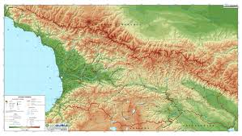
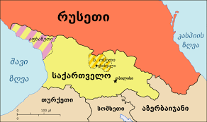

<h1>საქართველო</h1>

<h2>რუკა</h2>

<h3>მეზობელი ქვეყნები</h3>

<h4>ფართობი</h4>
<p>69 700 km²</p>
<h5>მოსახლეობა</h5>
<p>3 736 400</p>
<h6>მოსახლეობის პროცენტული მაჩვენებელი</h6>
<p>საქსტატის ცნობით, საქართველოს მოსახლეობის 48% კაცია, 52% კი – ქალი</p>